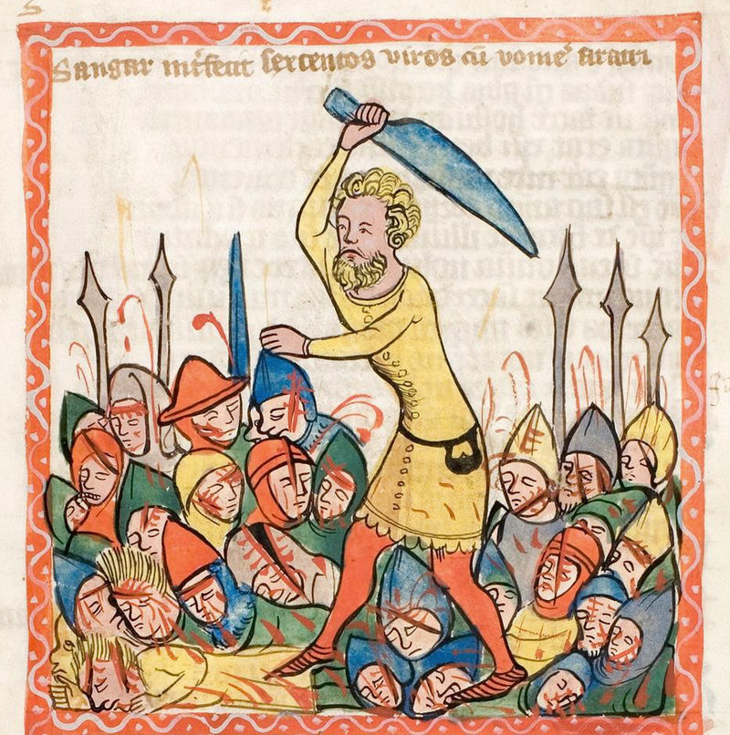
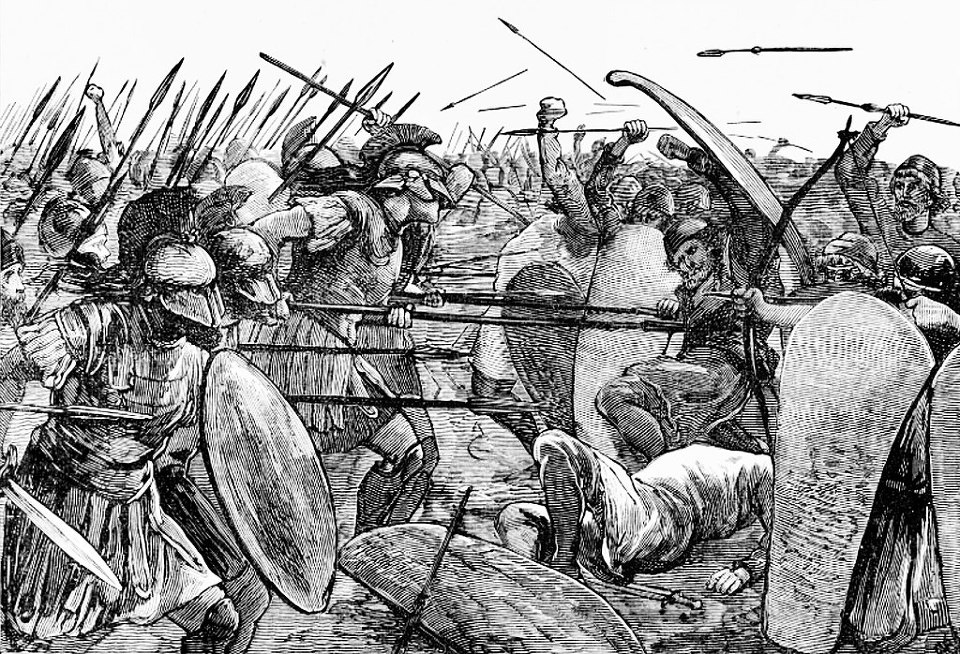
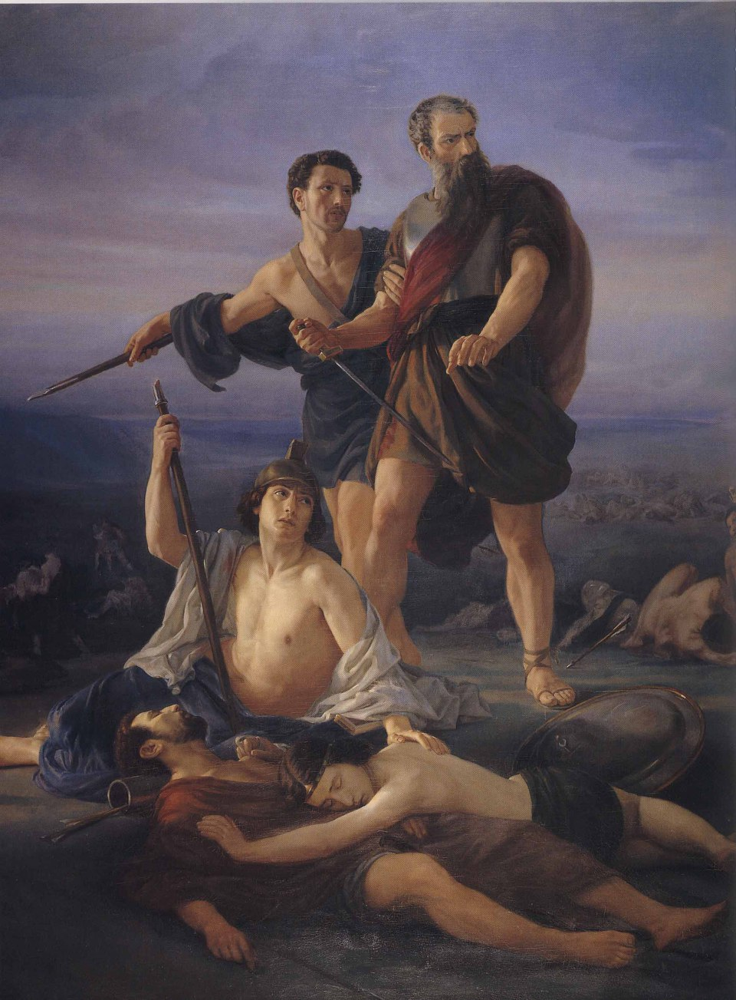
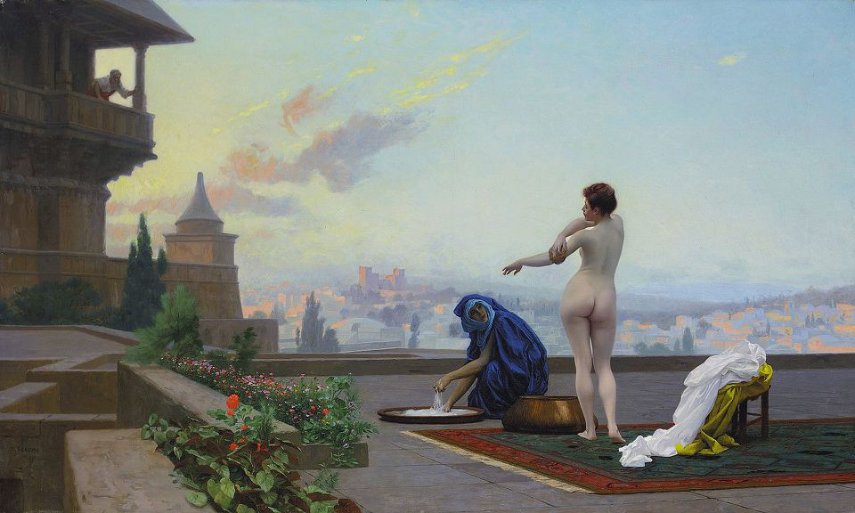
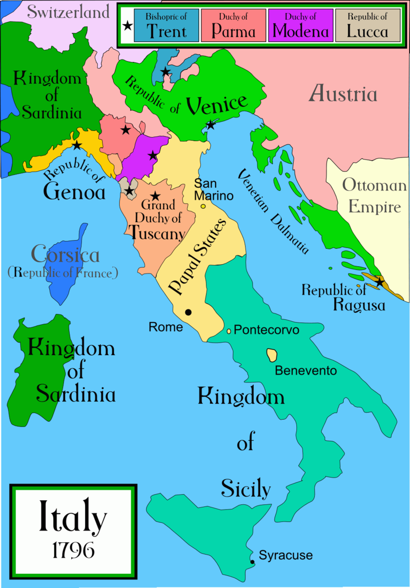
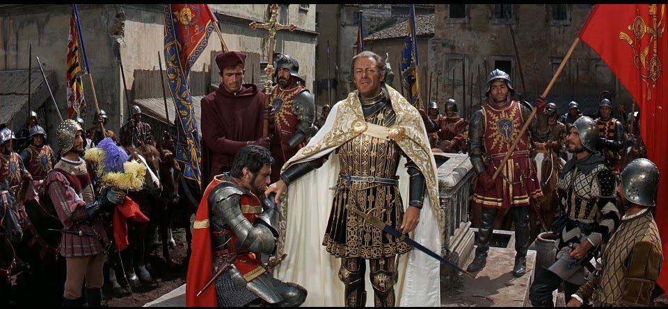
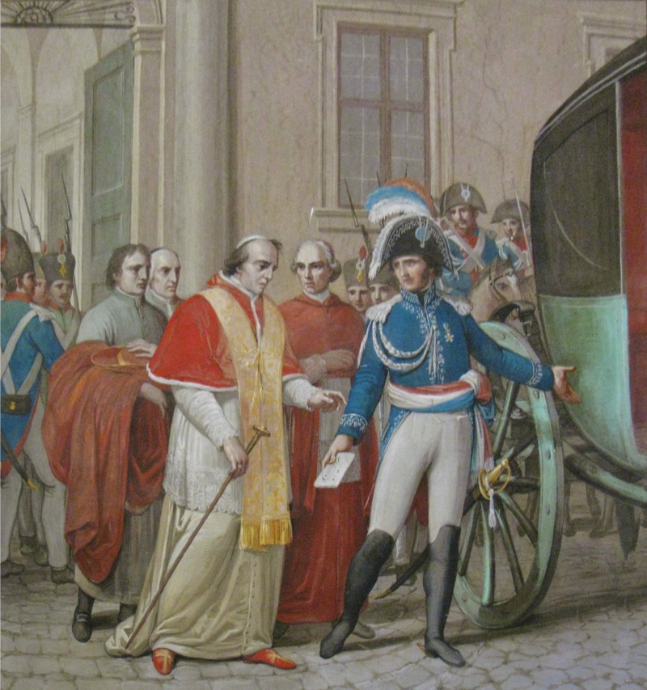
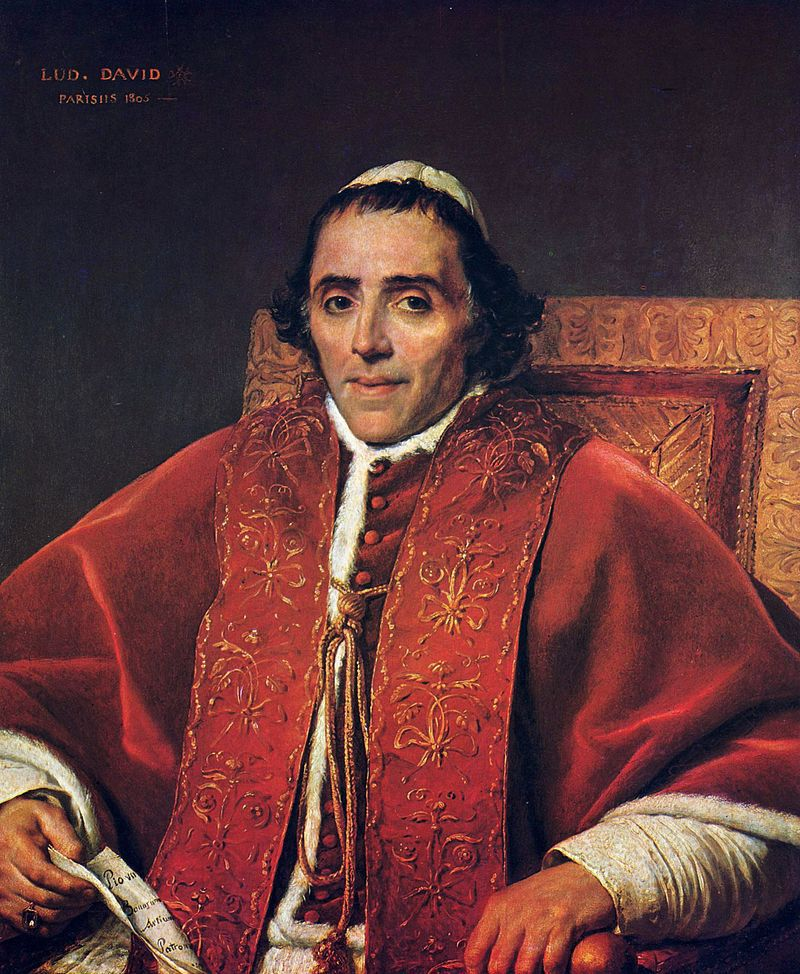
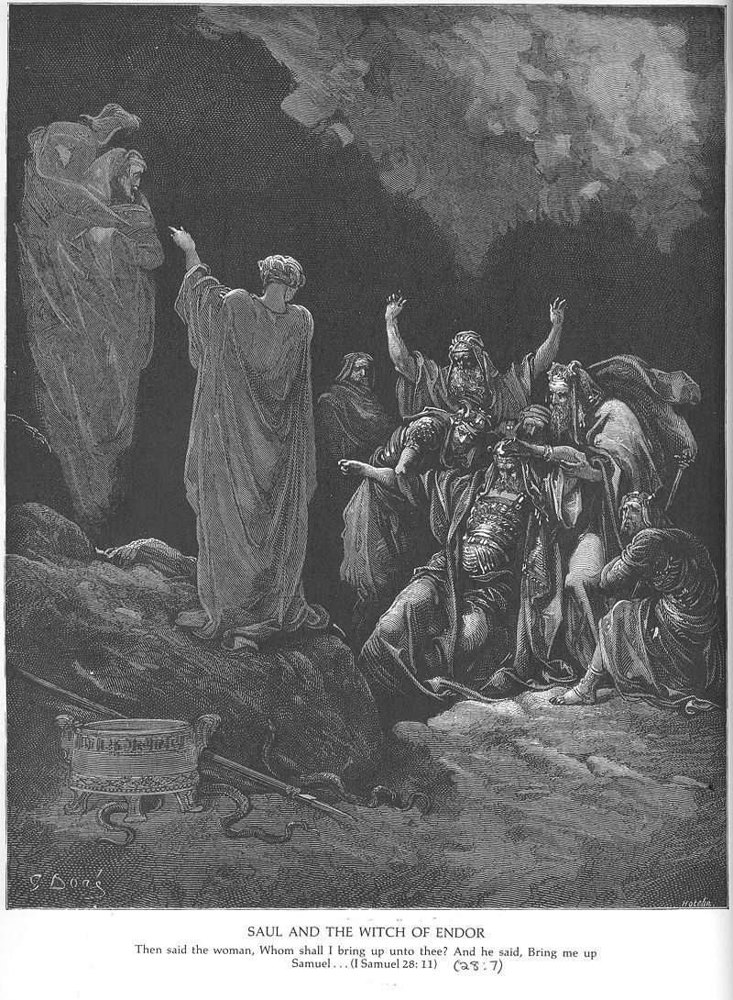

세속 권력과 종교 권력의 충돌 : 사울 vs. 사무엘, 나폴레옹 vs. 비오 7세
게시: 2019-01-07T06:30:00+09:00
고대 국가와 근대적 국가의 뚜렷한 차이점 중 하나가 바로 정교 분리입니다. 마치 무협지에서 관은 무림의 일에 관여치 않고 무림도 관의 일에 관여치 않는 것이 불문률인 것처럼, 종교는 정치에, 반대로 정치도 종교에 관여하지 않는 것이 정교 분리입니다. 하지만 무림과 관이 서로 상대의 일에 관여치 않기로 한 것은 서로의 영역이 겹치는 부분이 무척 많기 때문입니다. 가령 좌랭선의 숭산파가 중원 제패의 야심을 품고 타 문파를 무력으로 공격하는 것이 관에서 볼 때는 산적떼들의 난동과 종이 한장 차이일 것입니다. 이와 유사하게, 종교와 정치는 엄격히 구분된 것처럼 말은 하지만 사실은 겹치는 영역이 매우 많고, 서로가 서로에게 영향을 줄 수 밖에 없습니다. 그러니 예수님도 반란죄로 십자가형에 처해지셨고, 마호멧은 스페인부터 북아프리카, 중동, 중앙 아시아에 걸치는 대제국을 건설한 것입니다. 과거 이야기를 할 필요도 없이, 지금 우리나라에서도 개신교 지도부는 법에도 없는 사실상 면세 특혜를 받고 있지요. 이는 그 종교인들이 뻔뻔스러움 뿐만 아니라 선거 때 정치인들의 당락을 좌지우지할 만큼 실력을 갖추고 있기 때문입니다.
(종교가 정치에 관여하는 것은 어느 정도 피할 수 없는 일이라고 저는 생각합니다. 그러나 종교가 진화론 같은 과학에까지 종교적 논리를 들이대며 참견하면 그건 좀 곤란하지 않을까 싶습니다. 그러나 반면에 우주 창조 이론인 빅뱅 이론을 최초로 제시한 것이 카톨릭 신부이자 천문학자인 조르쥬 르메트르(Georges Lemaître)이기도 합니다.)
많은 경우, 고대 시절에는 종교와 정치가 사실상 일체화된 경우가 많았습니다. 제사장이 곧 우두머리인 경우가 대부분이었지요. 가령 이집트에서 가나안 땅으로 유대인들을 이끌고 나온 세계 최초의 대량 난민 리더인 모세가 대표적인 종교 수장이 국가 수장인 경우입니다. 그 뒤를 이은 것은 모세의 아들이 아닌 여호수아라는 점도 초기 고대 사회의 한계를 분명히 드러내는 부분입니다. 즉 아직 수장의 권세가 충분히 강하지 못해 그 신분이 세습되지 못하는 것입니다. 물론 이 차기 수장도 종교 지도자임과 동시에 군사 지도자이기도 합니다. 그리고 그 뒤에 이어지는 사사(士師) 시대에도 사사는 일종의 부족장임과 동시에 종교 및 군사 지도자이기도 합니다. 사사를 영어로는 judge라고 합니다만 이는 고대 히브리어 직위를 번역하다보니 이렇게 된 것일 뿐이고, 사사를 문약한 재판관 정도로 생각하시면 곤란합니다. 가령 천하장사 삼손도 사사거든요.

(삼손 뿐만 아니라 다른 많은 사사들도 강력한 무력을 바탕으로 많은 군사적 업적을 쌓은 사람들입니다. 가령 이 그림 속의 삼갈(Shamgar)은 소떼를 모는 막대기만 들고 혼자서 불레셋 전사 600명을 때려죽인 무시무시한 무공의 소유자입니다. 동방불패도 그 정도의 무공은 가지지 못했습니다. 그런데 이 중세의 삽화에서는 막대기는 그래도 좀 심했다고 생각했는지 소잡는 칼 같은 것으로 마구 살륙을 벌이고 있군요.)
(생각해보니 무협지에서도 일월신교 교주 임아행이나 명교 교주 장무기, 소림사 방장 등 종교 지도자가 가장 강력한 무공을 갖춘 경우가 정말 많은데요 ! 사진 속 인물은 영화 동방불패에 나오는 흡성대법의 창시자 임아행입니다. 실제 소설 소오강호에 나오는 임아행은 저런 미치광이가 아니라 정말 문무에 모두 통달한 무림 대종사로 나오는데 참 아쉽더군요.)
그러다 어느 정도 사회가 발전하면 결국 세속 권력이 발달하면서 종교 권력을 밀어내고 정치와 종교가 분리되기 시작합니다. 잠깐 신앙심을 접어놓고 구약 성경을 읽다보면 그런 갈림길이 드러나는 부분이 바로 사무엘 상편(1 Samuel)입니다.
사사라는 직위는 그 역할이 약간 불분명하긴 합니다만 제사장이기도 하고 군사 지도자이기도 하면서 또 원칙적으로는 신분이 세습되었던 모양입니다. 사무엘의 전임자인 엘리는 처음에는 제사장(삼상 1:9)이라고 소개되지만 죽을 때는 사사라고(삼상 4:18) 설명되는 인물인데, 그 두 아들은 무척 부패한 인물이었으나 팔은 안으로 굽는다고 엘리는 그들에게 사사 자리를 물려주었습니다. 그러나 그 두 아들은 불레셋과의 전투에서 패배하고 모두 전사해버리지요. 그 뒤를 이은 사무엘은 무척 공정하고 뛰어난 인물이었으나, 사무엘의 아들들도 사무엘과는 달리 무척 부패한 인물이었습니다. 그럼에도 불구하고 사무엘은 그 전임자 엘리처럼 또 그 아들들을 사사로 임명하여 세습을 시도했습니다. (아, 세습은 모든 악의 근원입니다 !) 그러나 이스라엘 백성들은 그에 반발하여 다른 선진국들처럼 우리도 왕정을 세우자고 들고 일어났습니다. 이는 사사로부터 군사권과 사법권, 행정권 등 많은 권력을 빼앗아 왕에게 주는 일이었으므로 사무엘이 이에 대해 (잠시 신앙심을 완전히 접어두고 읽으면) 신의 뜻을 저버리는 일이라며 매우 불쾌해하는 모습을 보실 수 있습니다.
8:1 사무엘은 나이가 들어 자기 아들들을 이스라엘의 사사로 삼았습니다.
8:2 사무엘의 두 아들 이름은 요엘과 아비야였습니다. 요엘과 아비야는 브엘세바에서 사사로 있었습니다.
8:3 그러나 사무엘의 아들들은 사무엘처럼 살지 않았습니다. 그들은 정직하지 않은 방법으로 돈을 모으려 했습니다. 그들은 남몰래 돈을 받고 공정하지 않은 재판을 했습니다.
8:4 그래서 장로들이 모두 모여 라마에 있는 사무엘에게 왔습니다.
8:5 장로들이 사무엘에게 말했습니다. “이제 당신은 늙었고 당신의 아들들은 당신처럼 살지 않습니다. 우리에게도 다른 나라들처럼 우리를 다스릴 왕을 세워 주십시오.”
8:6 사무엘은 장로들의 이 말을 기쁘게 여기지 않았습니다. 사무엘은 여호와께 기도드렸습니다.
8:7 여호와께서 사무엘에게 말씀하셨습니다. “백성들이 너에게 말하는 것을 다 들어 주어라. 백성들이 너를 버린 것이 아니라 나를 버려 내가 그들의 왕이 되지 못하게 하려는 것이다.
8:8 백성들이 하는 일은 언제나 똑같다. 내가 그들을 이집트에서 데리고 나올 때부터 오늘날까지 그들은 나를 버렸고 다른 신들을 섬겼다. 그런데 그들은 똑같은 일을 너에게도 하고 있다.
8:9 이제 백성의 말을 들어 주어라. 그러나 그들에게 경고하여라. 그들을 다스릴 왕이 어떤 일을 할지 일러 주어라.”
...중략...
8:19 그러나 백성들은 사무엘의 말을 들으려 하지 않았습니다. 백성들이 말했습니다. “아닙니다. 우리는 우리를 다스릴 왕이 필요합니다.
8:20 왕이 있으면 우리도 다른 모든 나라들과 같게 됩니다. 우리 왕이 우리를 다스릴 것입니다. 왕이 우리와 함께 나가서 우리를 위해 싸울 것입니다.”
결국 백성들에게 등떠밀려 왕을 옹립하게 된 사무엘이 하필이면 가장 빈약한 세력을 가진 벤야민 지파 중에서도 매우 별볼일 없던 가문 출신의 사울(Saul)을 왕으로 세운 것은 (물론 하나님의 뜻이라고 씌여있긴 합니다만) 새로 생긴 왕정을 견제하려는 종교 권력의 절박함을 잘 보여주는 부분입니다. 덕분에 사울은 왕으로 기름 부음을 받았음에도 일부 더 강력한 가문들로부터 왕으로 인정받지 못하고 (삼상 10:27) 한동안 평소 하던 대로 직접 황소로 쟁기질을 하며 살아야 했습니다. (삼상 11:5) 사울이 왕으로서의 입지를 확고히 한 것은 암몬 왕 나하스(Nahash)가 길르앗 야베스(Jabesh Gilead)를 침공했을 때 뛰어난 군사적 역량으로 그를 격파한 뒤의 일이었습니다. (삼상 11:15) 이건 고대 국가 세속 권력의 가장 중요한 역할이 바로 군사 지도자 역할이라는 점을 생각하면 당연한 일이라고 할 수 있습니다.
하지만 이렇게 확고해진 왕권도 종교 권력의 영역을 함부로 침범해서는 안 되었습니다. 사울과 그를 세운 사무엘의 사이가 결정적으로 틀어진 것은 사울이 사무엘의 권한인 번제를 직접 드렸기 때문이었습니다. 고대 사회에서 전투란 신의 마음에 그 결과가 달린 무척 중요한 종교적 이벤트였습니다. 따라서 전투 직전에 제사를 드리고 신의 은총을 구하는 것이 매우 중요했습니다. 바꾸어 말하면, 제사를 드리기 전에는 전투를 벌일 수가 없었습니다. 심지어 적군이 눈 앞까지 쳐들어와 우리 편 병사들을 마구 쳐죽이는 상황에서도 제사를 드리지 못하면 싸워서는 안 되었습니다. 이는 꼭 이스라엘에서만 그랬던 것이 아니라, 고대 그리스와 로마에서도 흔히 있던 일입니다. 가령 페르시아 전쟁 중인 기원전 479년 벌어진 플라타에아(Plataea) 전투에서, 스파르타의 섭정이자 총지휘관이었던 파우사니아스는 신에게 바치는 희생물의 내장에서 좋은 징조를 얻지 못하자, 좋은 징조가 나올 때까지 계속 희생물을 바치느라 전투 개시를 계속 미루었습니다. 페르시아군의 화살이 빗발처럼 날아와 아군 병사들이 픽픽 쓰러지는 상황에서도 좋은 징조가 나올 때까지 진격을 허락하지 않고 계속 희생물만 바치고 있었지요.

(결국 희생물의 내장에서 좋은 징조가 나왔기 때문인지 플라타에아 전투에서 스파르타를 비롯한 그리스 연합군은 마르도니우스의 페르시아군을 완전 궤멸시킵니다.)
사울도 똑같은 처지에 놓여 있었습니다. 사무엘 상 13장에는 사울이 불레셋과 전투를 앞두고 무척 불리한 상황에서 불레셋군과 대치한 상황이 이어집니다. 그런데 7일 간이나 기다렸는데도 번제를 드리기 위해 온다던 사무엘이 전투 현장에 나타나질 않았습니다. 번제를 지내지 않으면 싸울 수가 없는데, 불레셋 군은 언제라도 쳐들어올 수 있는 위기일발의 상황이 이어지자, 불안해진 이스라엘 병사들은 개죽음을 피해 대거 탈영에 나섰습니다. 일이 이렇게 되자 사울은 오지 않는 사무엘을 언제까지 기다릴 수가 없었습니다. 뭐 사무엘이 스위스 차장이 운행하는 기차를 타고 오는 것도 아니고, 도중에 산적을 만나 죽었는지 불레셋 척후병의 습격을 받았는지 혹은 노령에 병이 났는지 알 수 없는 일이니까요. 제 생각에 어떤 군사 지휘관이라고 해도 사울과 같은 결정을 내렸을 것 같은데, 사울은 사무엘 대신 자신이 직접 번제를 드리기로 합니다. 결과는 사무엘의 분노였지요. 제 상식으로는 지각을 한 사무엘에게 사울이 화를 냈어야 하는데 말입니다.
13:8 사울은 칠 일 동안, 기다렸습니다. 왜냐하면 사무엘이 그 곳에 오기로 되어 있었기 때문입니다. 하지만 사무엘은 길갈로 오지 않았습니다. 그러자 군인들이 하나 둘씩 떠나가기 시작하였습니다.
13:9 사울이 말했습니다. “나에게 태워 드리는 제물인 번제물과 화목 제물을 가지고 오시오.” 그리고 그는 하나님께 태워 드리는 제물인 번제물을 바쳤습니다.
13:10 사울이 막 태워 드리는 제물인 번제물을 바쳤을 때, 사무엘이 도착하였습니다. 사울은 사무엘을 맞으러 나갔습니다.
13:11 사무엘이 물었습니다. “대체 무슨 일을 하였소?” 사울이 대답했습니다. “군인들은 하나 둘씩 떠나가고 당신은 오지 않았습니다. 또 블레셋 사람들은 믹마스에 모여 있었습니다.
13:12 블레셋 사람들이 길갈로 와서 나를 공격할 것인데, 나는 아직 여호와의 허락을 받지 못하였습니다. 그래서 할 수 없이 태워 드리는 제물인 번제물을 바쳤습니다.”
13:13 사무엘이 말했습니다. “당신은 바보 같은 짓을 하였소. 당신은 하나님의 명령에 순종하지 않았소. 당신이 하나님께 순종했다면, 하나님께서는 이스라엘에 당신의 나라를 영원토록 세우셨을 것이오.
13:14 하지만 당신의 나라는 이제 이어지지 않을 것이오. 여호와께서는 자기 마음에 드는 사람을 찾아 내셨소. 여호와께서는 그 사람을 자기 백성의 통치자로 임명하셨소. 여호와께서 그렇게 하신 것은 당신이 여호와의 명령에 순종하지 않았기 때문이오.”
13:15 이 말을 하고 나서 사무엘은 길갈을 떠나 베냐민 땅 기브아로 갔습니다. 나머지 군인은 사울을 따라 싸움터에 나갔습니다. 사울이 남아 있는 사람들을 세어 보니 육백 명 가량이었습니다.
하지만 사무엘의 저주와 직무 유기에도 불구하고, 사사가 아닌 왕이 바친 번제도 효험이 있었는지 결국 사울의 아들 요나단의 용맹에 힘입어, 사울은 제대로 무장도 못한 600명의 병력으로 불레셋의 대군을 격파하는 큰 승리를 거둡니다. 이후로도 수십년 간 굳건한 왕정을 이어갑니다. 결국 사무엘은 최후의 사사가 되었고, 사사라는 직위는 왕정에 밀려 사라지게 됩니다. (신앙심을 완전히 접어두고 읽으면) 누가 봐도 이 사건은 명확히 종교 권력에 대한 세속 권력의 승리를 보여줍니다.
그러나 종교 권력의 반격도 만만치 않았습니다. 그렇게 종교 권력과 불화한 사울이 결국 불레셋에게 패배하여 죽고 다윗이 그 뒤를 잇게 된다는 것은 잘 아실 것입니다. 그리고 사울의 뒤를 이은 다윗은 사울과는 달리 종교 권력의 권위를 인정하고 종교적인 측면에서는 그에 굴복하는 모습을 보여주었기 때문에 성공할 수 있었습니다.
가령 사무엘로 하여금 다윗을 택하게 만든 사울의 죄라고 해봐야 (1) 사울이 사무엘의 권한을 침범하여 직접 번제를 드린 것과, (2) 아말렉인들을 토벌할 때 사무엘의 명령에 따라 남녀노소는 물론 가축들까지 모조리 쳐죽이라 했지만 가축들은 죽이지 않고 백성들과 나누어 가진 것 정도였습니다. 이건 분명히 종교적 의무 대신 백성들의 경제적 이익을 중시한 정당한 통치 행위입니다. 그러나 이로 인해 사무엘은 사울을 저주하고 다윗을 대신 왕으로 세웠으며, 결국 사울은 본인 뿐만 아니라 아들들까지 모두 죽어야 했습니다. 그에 비해 다윗의 죄는 '위력에 의한 성폭행' 뿐만 아니라 부하의 미녀 아내를 차지하기 위해 충직한 부하를 함정에 밀어넣어 살해한 것으로서, 현대 기준으로 볼 때도 천인공노할 범죄였습니다. 하지만 다윗은 선지자 나단(Nathan) 앞에서 회개하는 모습을 보였기 때문에 용서를 받을 뿐만 아니라, 그렇게 부정한 방법으로 얻은 미녀 밧세바(Bathsheba)를 정식으로 인정받고 그 사이에서 난 아들 솔로몬에게 왕위까지 물려줄 수 있었습니다.
사울과 다윗의 이야기는 결국 세속 권력도 종교 권력의 협조 없이는 유지될 수 없다는 종교 세력의 경고로 볼 수 있습니다. 고대~중세 시절에는 당연히 그랬을 것입니다. 과연 근대라고 할 수 있는 나폴레옹 시대에도 그런 관례가 이어졌을까요 ?

(블레셋군에게 패배한 뒤 이교도 블레셋인들에게 당할 치욕을 피하기 위해 검 위에 엎어져 자살하기 직전인 사울 왕입니다. 그 옆에 선 시종도 같은 방법으로 자살합니다. 그런 것을 보면 구약에서는 자살하면 지옥에 간다는 가르침이 없었던 것 같습니다. 사실 따지고 보면 신약에도 직접적으로 자살을 금한 구절은 없더군요.)

(유명한 다윗 왕과 밧세바의 이야기를 묘사한 그림입니다. 가만 보면 성경은 정말 19금으로 지정해야 하는 책이 아닌가 싶을 정도로 야한 부분이 많습니다.)
나폴레옹은 자타가 공인하는 비종교적 인간이었습니다. 나폴레옹이 세인트 헬레나에서 구술한 회고록에 따르면 나폴레옹은 평생 진정으로 종교를 가져본 적이 없었습니다. 브리엔 사관학교에서 소년 시절을 보낼 때, 학교에서의 미사 시간에 카토나 케사르 같은 고대 로마의 영웅들이 하나님이나 예수를 믿지 않았기 때문에 지금 지옥에 있다는 이야기를 들은 것이 원인이었다고 합니다. "그런 훌륭한 위인들이 자신이 알지도 못하는 종교를 갖지 않았다는 이유로 지옥불에서 고통받아야 한다는 것이 말이나 되는 이야기인가 ? 나는 그때 이후로 종교를 갖지 않았다." 라고 되어 있습니다. 나폴레옹은 역사서를 많이 읽은 사람으로 유명합니다만, 그의 성향으로 볼 때 성경을 열심히 탐독했을 것 같지는 않습니다. 그래서인지, 나폴레옹은 종교 권력에 대해 다윗과 같은 겸허함을 배우지 못했습니다. 결국 그는 사울의 길을 택했지요.
프랑스 대혁명은 왕정과 귀족에 대한 혁명이기도 했지만 많은 특권과 부를 누려온 카톨릭 사제 계급에 대한 혁명이기도 했습니다. 대혁명 기간 중 카톨릭은 많은 재산을 잃었고 많은 사제들이 감옥에 쳐박혔습니다. 그런 소동 후에 나폴레옹과 교황 비오 7세(Pius VII) 사이에 이루어진 1801년 정교협약(Concordat)은 세속 권력에게 일방적으로 두들겨 맞던 카톨릭으로서는 간신히 체면을 차릴 정도의 협정이었습니다. 카톨릭이 프랑스의 주요 종교로 공식 선포되기는 했으나 국교로서의 지위는 상실했고, 프랑스 내 사제들의 급여는 프랑스 정부가 지급하게 되었지만 정작 그 많던 프랑스 내 카톨릭 자산은 모두 상실했으며, 바티칸에게도 프랑스의 주교를 해임할 권한은 주어졌으나 정작 주교 임명권은 프랑스 정부, 정확하게는 나폴레옹에게 주어졌습니다. 어쩔 수가 없었습니다. 하나님의 권세는 멀고 나폴레옹의 총검은 가까왔으니까요.
이는 분명히 세속 권력이 종교 권력의 영역에 부당하게 침입하는 모양새였습니다. 나폴레옹 같은 세속적인 인간이 카톨릭 사제를 임명하다니요 ! 그러나 비오 7세도 분명히 세속 권력의 영역에 발을 딛고 있었습니다. 그는 영적 세계의 수장이도 했지만 동시에 세속 권력을 가진 군주이기도 했습니다. 교황령(Papal States, Stato Pontificio)이라고 해서 교황이 세속 군주로서 직접 통치하는 영토가 꽤 상당했거든요. 물론 이 영토는 나폴레옹의 이탈리아 침공으로 쉽사리 점령당했습니다. 비오 7세의 전임자인 비오 6세는 나폴레옹의 1차 침공 때 로마가 함락되면서 포로로 프랑스에 잡혀가 거기서 죽기까지 했지요. 1801년 정교협약에 의해 이런 영토 중 일부는 다시 바티칸에 반환되었습니다.

(교황이 영적인 세계 뿐만 아니라 지상의 세계에서도 군주로 통치했던 교황령의 지도입니다. 생각보다 꽤 넓습니다. 교황령이 사라진 것은 1861년 가리발디의 정복 전쟁에 의해서였고, 공식적으로 로마까지 함락된 것은 1870년 이탈리아 왕국군이 포격전을 벌이며 쳐들어온 다음이었습니다. 어차피 아무 승산이 없는 전투였는데도 당시 교황 비오 9세의 고집으로 필요 이상으로 치열한 전투가 벌어져 수십 명이 전사했습니다.)

(교황령이 이렇게 넓은 이유 중 하나는 16세기 초반 이탈리아 중부에서 갑옷을 입고 직접 전투를 벌이며 영토 확장에 나섰던 율리오 2세(Julius II) 덕분입니다. 이 사진은 1965년 미켈란젤로의 일대기를 그린 The Agony and the Ecstasy 이라는 영화에 나오는 중무장한 율리오 2세입니다. 당시 이탈리아 일대는 당연히 모두 카톨릭이었을텐데, 전투 현장에서 갑옷을 입은 교황과 칼을 맞대게 된 적군 병사는 정말 황당했을 것 같습니다.)
나폴레옹과 비오 7세의 사이가 다시 나빠진 것은 1805년 아우스테를리츠 전투 직전이었습니다. 영국군의 상륙을 막는다는 핑계 하에 나폴레옹이 교황령 주요 항구인 안코나(Ancona)를 점령해버린 것입니다. 그런데 사실 교황령 내에서 나폴레옹의 적국인 영국과 러시아가 활발한 활동을 하고 있었다는 것도 사실이긴 했습니다. 교황은 편지를 보내 나폴레옹에게 즉각 철수를 요구하며 강력히 항의를 했고, 나폴레옹도 교황이 '교회의 장자'인 프랑스의 등 뒤에 칼을 꽂는다고 노발대발했습니다.
그 이후로도 나폴레옹은 교황령을 조금씩 잠식해들어가며 자신이 왕으로 있는 이탈리아 왕국령으로 편입시켰고, 이런 강탈행위에 대해 교황은 나폴레옹이 임명한 주교들을 승인하지 않음으로써 소극적 반항으로 대응했습니다. 하지만 나폴레옹은 교황이 생각하는 것보다 더 돌+아이였습니다. 틸지트 조약으로 러시아 쪽까지 대략 정리한 나폴레옹은 1808년 2월 다시 로마를 점령해버리고 이어서 문제의 안코나를 포함한 굵직한 교황령 몇 개를 또 이탈리아 왕국으로 편입시켜버렸습니다. 나폴레옹은 거기서 그치지 않았습니다. 다음 해인 1809년에는 아예 로마까지 프랑스령으로 선언해버렸지요. 교황의 세속 영토를 모조리 빼앗아버린 것이지요. 이 정도면 아무리 비오 7세가 부처님 가운데 토막이라고 해도 참기 어려웠습니다. 교황은 나폴레옹과 그의 추종자들에 대해 일괄적인 파문을 선언했습니다. 이는 카톨릭 교회에서 가장 심각한 징벌이었지요. 물론 하나님의 벼락이 당장 나폴레옹 머리 위에 떨어지지는 않았고, 나폴레옹은 당시 나폴리 왕이던 매제 뮈라(Joachim Murat)에게 편지를 휘갈겨 '교황을 가두어버려야 한다'라고 분노를 터뜨렸습니다. 물론 이는 명령이 아니라 그냥 분풀이용 편지였는데 문제는 그 편지를 받은 뮈라는 상상력이 부족한 대신 실행력은 뛰어난 불꽃남자였다는 점이었습니다. 뮈라는 야밤에 병력을 보내 정말 비오 7세를 체포해왔습니다.

(뮈라의 부하 라데(Radet) 장군에게 체포되는 비오 7세입니다. 라데는 훗날 비오 7세를 체포할 때의 순간에 대해 'Dès ce moment là, ma première communion m'est apparue !' (그 순간 내 첫번째 성찬식 장면이 눈 앞에 아른거리더라 !) 라고 언급했습니다.)
이 소식에 나폴레옹은 또 복장이 터졌습니다. 물론 이번에는 뮈라에 대해서였지요. "아니 그걸 시킨다고 진짜 하냐 !!" 그러나 생각해보니 뭐 이미 엎질러진 물인데 이제 와서 교황에게 사과한다고 좋을 것도 없다고 생각했나 봅니다. 그는 교황을 바티칸에 돌려보내지 않고 북부 이탈리아의 사보나(Savona)에서 3년 간 가택 연금시켰고, 1812년부터는 교황을 알프스를 넘어 프랑스로 끌고 와 퐁텐블로(Fontainbleau) 성에 연금시켰습니다. 특히 퐁텐블로로 교황을 데려올 때 교황은 열병과 변비 등으로 건강 상태가 극히 안 좋았는데도 나폴레옹이 보낸 의사 한명만 동승시킨 채 야간에만 마차로 강행군을 시켜 교황이 거의 요단강을 건널 뻔 했다고 합니다. 야간에만 이동시킨 것은 물론 아직 신앙심이 강한 편이었던 프랑스 남부 주민들이 교황이 그렇게 험하게 끌려가는 것을 보지 못하게 하려 함이었습니다.

(이 사람 좋게 생기신 분이 바로 비오 7세이십니다. 그림이 매우 명작으로 보이신다면 눈썰미가 있으신 겁니다. 나폴레옹 전속 화가 다비드가 그린 것이거든요.)
교황의 이런 시련은 1814년까지 계속 되었습니다. 나폴레옹이 패퇴하던 1814년 5월에야 오스트리아군 소속 헝가리 라데츠키 경기병 연대(5th Radetzky Hussars)가 교황을 구출하여 로마까지 호송했습니다. 이때 교황이 감사의 표시로 이 경기병 연대에게 하사한 복잡한 라틴어가 수놓인 군기는 지금은 군사박물관으로 쓰이는 오스트리아 빈의 무기고에 아직도 전시되어있습니다.
결국 여러분이 다 아시는 것처럼 나폴레옹은 세인트 헬레나 섬으로 귀양살이를 떠나야 했고, 비오 7세는 영국 정부에게 편지를 써 나폴레옹이 그 섬에서라도 좀 더 나은 대우를 받을 수 있도록 선처해달라고 부탁을 했습니다. 비오 7세는 나폴레옹이 위암으로 죽은 뒤 2년 뒤 사망했습니다.
사무엘은 사울보다 먼저 죽었고, 또 죽은 뒤에 혼백으로 사울 앞에 나타났을 때조차도 사울에게 저주를 퍼부은 것(삼상 28:16)과는 꽤 다른 결말이라고 할 수 있을까요 ?

(성경에서도 해석에 일부 논란이 있는 사무엘 상 28장에 나오는 '엔돌의 신접한 여인'(the witch of Endor)을 통해 사무엘의 영혼과 사울이 만나는 부분입니다. 과연 죽은 사람의 영혼을 영매를 통해 불러낼 수 있는가가 핵심인데, 특히 사무엘 정도의 선지자는 당연히 천국에 있어야 하기 때문에 더욱 논란의 여지가 있습니다. 현재 주된 해석은 진짜 사무엘의 영혼이 불려온 것이 아니라 마녀의 거짓말에 의해 사울이 속는 장면이라는 것이라고 알고 있습니다.)
Source : The Life of Napoleon Bonaparte by William Milligan Sloane
http://nocr.net/index.php?document_srl=23948&mid=koreasy
https://en.wikipedia.org/wiki/Pope_Pius_VII
https://en.wikipedia.org/wiki/Napoleon_and_the_Catholic_Church
https://www.napoleon.org/en/history-of-the-two-empires/articles/napoleon-and-the-pope-from-the-concordat-to-the-excommunication